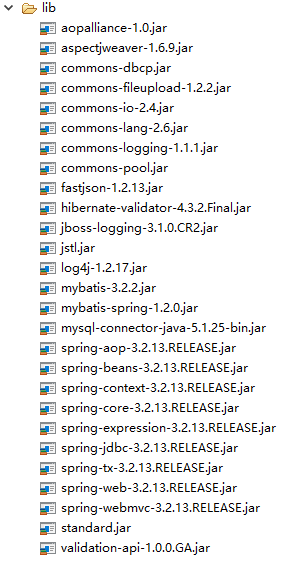
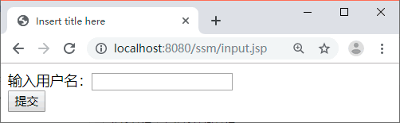
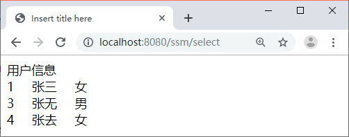

首页 > 编程笔记
SSM（Spring+Spring MVC+MyBatis）框架整合搭建详细步骤
因为 Spring MVC 是 Spring 框架中的一个子模块，所以 Spring 与 SpringMVC 之间不存在整合的问题。实际上，SSM 框架的整合只涉及 Spring 与 MyBatis 的整合以及 Spring MVC 与 MyBatis 的整合。
实现 SSM 框架的整合首先需要准备 3 个框架的 JAR 包以及其他整合所需要的 JAR 包。
在《MyBatis与Spring的整合步骤》教程中已经讲解了 Spring 与 MyBatis 框架整合所需要的 JAR 包，本节只需再加入 Spring MVC 的相关 JAR 包（spring-web-3.2.13.RELEASE.jar 和 spring-webmvc-3.2.13.RELEASE.jar）即可。因此，SSM 框架整合所需的 JAR 包如图 1 所示。
UserService 接口的代码如下：
在图 2 中输入用户名，例如“张”，然后单击“提交”按钮，显示如图 3 所示的结果。
实现 SSM 框架的整合首先需要准备 3 个框架的 JAR 包以及其他整合所需要的 JAR 包。
在《MyBatis与Spring的整合步骤》教程中已经讲解了 Spring 与 MyBatis 框架整合所需要的 JAR 包，本节只需再加入 Spring MVC 的相关 JAR 包（spring-web-3.2.13.RELEASE.jar 和 spring-webmvc-3.2.13.RELEASE.jar）即可。因此，SSM 框架整合所需的 JAR 包如图 1 所示。

图 1 ssm 框架整合所需 JAR 包
图 1 ssm 框架整合所需 JAR 包
SSM 框架整合应用测试
下面是一个应用案例（根据用户名模糊查询用户信息，用户表是《第一个MyBatis程序》教程中的数据表 user），使用 SSM 框架实现该案例的具体步骤如下：1. 创建应用并导入相关 JAR 包
创建应用 ssm，将图 1 所示的 JAR 包复制到应用的 lib 中。2. 创建信息输入页面
在 WebContent 目录下创建 input.jsp 页面，具体代码如下：
<%@ page language="java" contentType="text/html; charset=UTF-8"
pageEncoding="UTF-8"%>
<!DOCTYPE html PUBLIC "-//W3C//DTD HTML 4.01 Transitional//EN" "http://www.w3.org/TR/html4/loose.dtd">
<html>
<head>
<meta http-equiv="Content-Type" content="text/html; charset=UTF-8">
<title>Insert title here</title>
</head>
<body>
<form action="${pageContext.request.contextPath }/select" method="post">
输入用户名：<input type="text" name="uname"/><br>
<input type="submit" value="提交"/>
</form>
</body>
</html>
3. 创建持久化类
在 src 目录下创建一个名为 com.po 的包，并在该包中创建一个 PO 类 MyUser。具体代码如下：
package com.po;
/**
* mybatis数据库中user表的持久化类
*/
public class MyUser {
private Integer uid;
private String uname;
private String usex;
public Integer getUid() {
return uid;
}
public void setUid(Integer uid) {
this.uid = uid;
}
public String getUname() {
return uname;
}
public void setUname(String uname) {
this.uname = uname;
}
public String getUsex() {
return usex;
}
public void setUsex(String usex) {
this.usex = usex;
}
}
4. 创建 Dao 层
在 src 目录下创建一个名为 com.dao 的包，并在该包中创建一个名为 UserDao 的接口。具体代码如下：
package com.dao;
import java.util.List;
import org.springframework.stereotype.Repository;
import com.po.MyUser;
@Repository("userDao")
/*
* 使用Spring自动扫描MyBatis的接口并装配 （Spring将指定包中所有被@Mapper注解标注的接口自动装配为Mybatis的映射接口
*/
public interface UserDao {
/**
* 接口方法对应SQL映射文件UserMapper.xml中的id
*/
public List<MyUser> selectUserByUname(MyUser user);
}
5. 创建 Service 层
在 src 目录下创建一个名为 com.service 的包，并在该包中创建一个名为 UserService 的接口和该接口的实现类 UserServiceImpl。UserService 接口的代码如下：
package com.service;
import java.util.List;
import com.po.MyUser;
public interface UserService {
public List<MyUser> selectUserByUname(MyUser user);
}
UserServiceImpl 实现类的代码如下：
package com.service;
import java.util.List;
import org.springframework.beans.factory.annotation.Autowired;
import org.springframework.stereotype.Service;
import org.springframework.transaction.annotation.Transactional;
import com.dao.UserDao;
import com.po.MyUser;
@Service("userService")
@Transactional
/**
* 加上注解@Transactional可以指定这个类需要受Spring的事务管理，
*注意@Transactional只能针对public属性范围内的方法添加，
*本案例并不需要处理事务，在这里只是告诉读者如何使用事务
*/
public class UserServiceImpl implements UserService {
@Autowired
private UserDao userDao;
@Override
public List<MyUser> selectUserByUname(MyUser user) {
return userDao.selectUserByUname(user);
}
}
6. 创建 Controller 层
在 src 目录下创建一个名为 com.controller 的包，并在该包中创建一个名为 UserController 的控制器类。具体代码如下：
package com.controller;
import java.util.List;
import org.springframework.beans.factory.annotation.Autowired;
import org.springframework.stereotype.Controller;
import org.springframework.ui.Model;
import org.springframework.web.bind.annotation.RequestMapping;
import com.dao.UserDao;
import com.po.MyUser;
@Controller
public class UserController {
@Autowired
private UserDao userDao;
@RequestMapping("/select")
public String select(MyUser user, Model model) {
List<MyUser> list = userDao.selectUserByUname(user);
model.addAttribute("userList", list);
return "userList";
}
}
7. 创建用户信息显示页面
在 WEB-INF 目录下创建文件夹 JSP，并在该文件夹下创建用户信息显示页面 userList. jsp。具体代码如下：
<%@ page language="java" contentType="text/html; charset=UTF-8"
pageEncoding="UTF-8"%>
<%@taglib prefix="c" uri="http://java.sun.com/jsp/jstl/core"%>
<!DOCTYPE html PUBLIC "-//W3C//DTD HTML 4.01 Transitional//EN" "http://www.w3.org/TR/html4/loose.dtd">
<html>
<head>
<meta http-equiv="Content-Type" content="text/html; charset=UTF-8">
<title>Insert title here</title>
</head>
<body>
用户信息
<br>
<c:forEach items="${userList }" var="user">
${user.uid }
${user.uname }
${user.usex }<br>
</c:forEach>
</body>
</html>
8. 创建相关配置文件
1）web.xml
在 WEB-INF 目录下创建 web.xml 文件，并在该文件中实例化 ApplicationContext 容器、启动 Spring 容器、配置 DispatcherServlet 以及配置字符编码过滤器。具体代码如下：
<?xml version="1.0" encoding="UTF-8"?>
<web-app xmlns:xsi="http://www.w3.org/2001/XMLSchema-instance"
xmlns="http://java.sun.com/xml/ns/javaee"
xmlns:web="http://java.sun.com/xml/ns/javaee/web-app_2_5.xsd"
xsi:schemaLocation="http://java.sun.com/xml/ns/javaee http://java.sun.com/xml/ns/javaee/web-app_3_0.xsd"
version="3.0">
<display-name>springMVC</display-name>
<welcome-file-list>
<welcome-file>index.jsp</welcome-file>
</welcome-file-list>
<!-- 实例化ApplicationContext容器 -->
<context-param>
<!-- 加载src目录下的 applicationContext-*.xml文件-->
<param-name>contextConfigLocation</param-name>
<param-value>classpath:applicationContext-*.xml</param-value>
</context-param>
<filter>
<filter-name>encodingFilter</filter-name>
<filter-class>
org.springframework.web.filter.CharacterEncodingFilter
</filter-class>
<init-param>
<param-name>encoding</param-name>
<param-value>UTF-8</param-value>
</init-param>
<init-param>
<param-name>forceEncoding</param-name>
<param-value>true</param-value>
</init-param>
</filter>
<filter-mapping>
<filter-name>encodingFilter</filter-name>
<url-pattern>/*</url-pattern>
</filter-mapping>
<servlet>
<servlet-name>spring</servlet-name>
<servlet-class>org.springframework.web.servlet.DispatcherServlet</servlet-class>
<init-param>
<param-name>contextConfigLocation</param-name>
<param-value>classpath:springmvc-servlet.xml</param-value>
</init-param>
<load-on-startup>1</load-on-startup>
</servlet>
<servlet-mapping>
<servlet-name>spring</servlet-name>
<url-pattern>/</url-pattern>
</servlet-mapping>
<listener>
<listener-class>
org.springframework.web.context.ContextLoaderListener
</listener-class>
</listener>
<listener>
<listener-class>
org.springframework.web.util.Log4jConfigListener
</listener-class>
</listener>
</web-app>
2）springmvc-servlet.xml
在 WEB-INF 目录下创建 Spring MVC 的核心配置文件 springmvc-servlet.xml，在该文件中仅配置控制器扫描包和视图解析器，具体代码如下：
<?xml version="1.0" encoding="UTF-8"?>
<beans xmlns="http://www.springframework.org/schema/beans"
xmlns:xsi="http://www.w3.org/2001/XMLSchema-instance"
xmlns:mvc="http://www.springframework.org/schema/mvc"
xmlns:p="http://www.springframework.org/schema/p"
xmlns:context="http://www.springframework.org/schema/context"
xsi:schemaLocation="
http://www.springframework.org/schema/beans
http://www.springframework.org/schema/beans/spring-beans.xsd
http://www.springframework.org/schema/context
http://www.springframework.org/schema/context/spring-context.xsd
http://www.springframework.org/schema/mvc
http://www.springframework.org/schema/mvc/spring-mvc.xsd">
<!-- 使用扫描机制扫描包 -->
<context:component-scan base-package="com.controller" />
<!-- 完成视图的对应 -->
<!-- 对转向页面的路径解析。prefix：前缀， suffix：后缀 -->
<bean
class="org.springframework.web.servlet.view.InternalResourceViewResolver">
<property name="prefix" value="/WEB-INF/jsp/" />
<property name="suffix" value=".jsp" />
</bean>
</beans>
3）log4j.properties
在 src 目录下创建 MyBatis 的日志文件 log4j.properties，具体代码如下：
# Global logging configuration
log4j.rootLogger=ERROR,stdout
# MyBatis logging configuration...
log4j.logger.com.mybatis=DEBUG
# Console output...
log4j.appender.stdout=org.apache.log4j.ConsoleAppender
log4j.appender.stdout.layout=org.apache.log4j.PatternLayout
log4j.appender.stdout.layout.ConversionPattern=%5p [%t] - %m%n
4）applicationContext.xml
在 src 目录下创建 Spring 的配置文件 applicationContext.xml，在该文件中配置数据源、添加事务支持、开启事务注解、配置 MyBatis 工厂、进行 Mapper 代理开发以及指定扫描包。具体代码如下：
<?xml version="1.0" encoding="UTF-8"?>
<beans xmlns="http://www.springframework.org/schema/beans"
xmlns:xsi="http://www.w3.org/2001/XMLSchema-instance"
xmlns:aop="http://www.springframework.org/schema/aop"
xmlns:p="http://www.springframework.org/schema/p"
xmlns:tx="http://www.springframework.org/schema/tx"
xmlns:context="http://www.springframework.org/schema/context"
xsi:schemaLocation="
http://www.springframework.org/schema/beans
http://www.springframework.org/schema/beans/spring-beans-2.5.xsd
http://www.springframework.org/schema/aop
http://www.springframework.org/schema/aop/spring-aop-2.5.xsd
http://www.springframework.org/schema/tx
http://www.springframework.org/schema/tx/spring-tx-2.5.xsd
http://www.springframework.org/schema/context
http://www.springframework.org/schema/context/spring-context.xsd">
<!--配置数据源 -->
<bean id="dataSource" class="org.apache.commons.dbcp.BasicDataSource"
destroy-method="close" scope="singleton">
<property name="driverClassName" value="com.mysql.jdbc.Driver" />
<property name="url"
value="jdbc:mysql://localhost:3306/mybatis?characterEncoding=utf8" />
<property name="username" value="root" />
<property name="password" value="1128" />
<property name="maxTotal" value="30" />
<property name="maxIdle" value="10" />
<property name="initialSize" value="5" />
</bean>
<!-- 添加事务支持 -->
<bean id="txManager"
class="org.springframework.jdbc.datasource.DataSourceTransactionManager">
<property name="dataSource" ref="dataSource" />
</bean>
<!-- 开启事务注解 -->
<tx:annotation-driven transaction-manager="txManager" />
<!-- 配置mybitas工厂，同时指定数据源，并与MyBatis完美整合 -->
<bean id="sqlSessionFactory" class="org.mybatis.spring.SqlSessionFactoryBean">
<property name="dataSource" ref="dataSource" />
<!-- configLocation的属性值为Mybatis的核心配置文件 -->
<property name="configLocation" value="classpath:mybatis-config.xml" />
</bean>
<!-- Mapper代理开发，使用Spring自动扫描Mybatis的接口并装配 -->
<bean class="org.mybatis.spring.mapper.MapperScannerConfigurer">
<!-- mybatis-spring组件的扫描器 -->
<property name="basePackage" value="com.dao" />
<property name="sqlSessionFactoryBeanName" value="sqlSessionFactory" />
</bean>
<!-- 指定需要扫描的包（包括子包），使注解生效。dao包在mybatis-spring组件中已经扫描，这里不在需要扫描 -->
<context:component-scan base-package="com.service" />
</beans>
5）创建 MyBatis 的核心配置文件和 SQL 映射文件
在 src 目录下创建 com.mybatis 文件夹，并在该文件夹中创建 MyBatis 的核心配置文件 mybatis-config.xml。具体代码如下：
<?xml version="1.0" encoding="UTF-8"?>
<!DOCTYPE configuration PUBLIC "-//mybatis.org//DTD Config 3.0//EN"
"http://mybatis.org/dtd/mybatis-3-config.dtd">
<configuration>
<mappers><!-- 映射器告诉MyBatis到哪里去找映射文件 -->
<mapper resource="com/dao/UserMapper.xml" />
</mappers>
</configuration>
在 com.mybatis 文件夹中创建 SQL 映射文件 UserMapper.xml。具体代码如下：
<?xml version="1.0" encoding="UTF-8"?>
<!DOCTYPE mapper PUBLIC "-//mybatis.org//DTD Mapper 3.0//EN"
"http://mybatis.org/dtd/mybatis-3-mapper.dtd">
<mapper namespace="com.dao.UserDao">
<select id="selectUserByUname" resultType="com.po.MyUser"
parameterType="com.po.MyUser">
select * from user where 1=1
<if test="uname!=null and uname!=''">
and uname like concat('%',#{uname},'%')
</if>
</select>
</mapper>
9. 发布并运行应用
首先将 springMVCDemo11 应用发布到 Tomcat 服务器并启动 Tomcat 服务器，然后通过地址“http://localhost:8080/ssm/input.jsp”访问信息输入页面，运行结果如图 2 所示。

图 2 信息输入页面
图 2 信息输入页面
在图 2 中输入用户名，例如“张”，然后单击“提交”按钮，显示如图 3 所示的结果。

图 3 用户列表页面
图 3 用户列表页面
关注公众号「站长严长生」，在手机上阅读所有教程，随时随地都能学习。内含一款搜索神器，免费下载全网书籍和视频。

微信扫码关注公众号